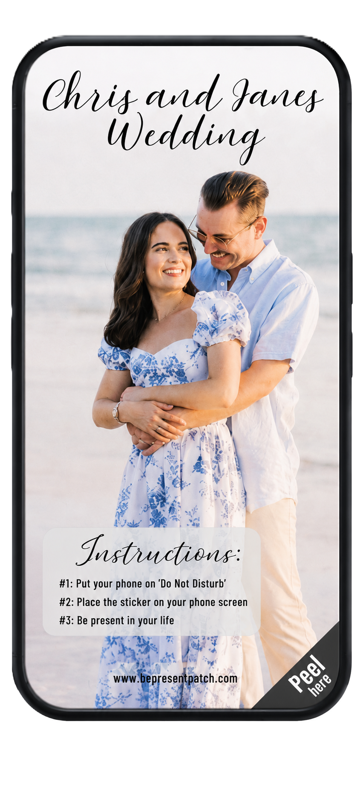
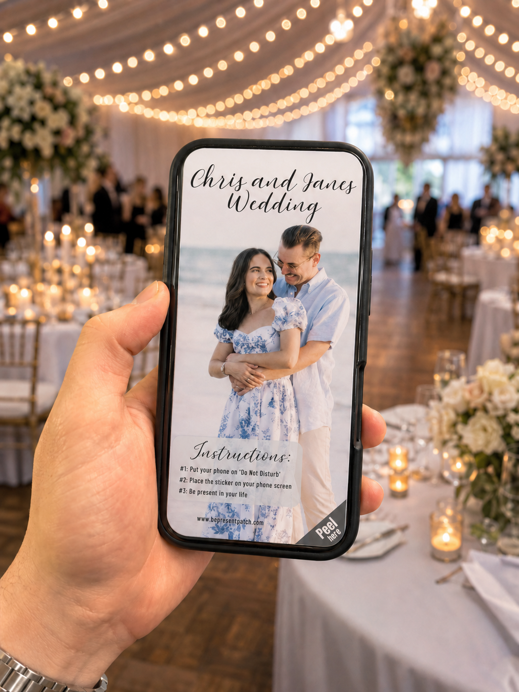

Custom event designs
A wedding favor that protects the memory while still letting phones exist.


Make it personal.
Add the couple's names, a photo, event instructions, and a peel tab. Guests still have phones for emergencies, but the screen is covered during the moments that should feel human.
- Color or black-and-white designs
- Great for welcome bags, place settings, and ceremony entrances
- Useful for weddings, private parties, school events, and comedy clubs